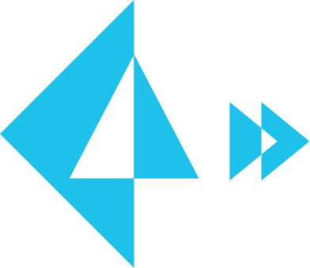
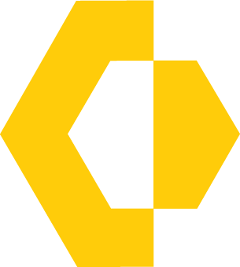
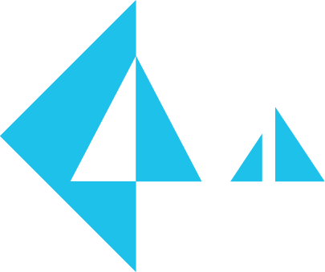

SASEPrisma Access · Secure Access Service Edge
ZTNA 2.0Zero Trust Network Access — least-privileged access to every app, no implicit trust, continuous verification
ATPAdvanced Threat Prevention
AURLAdvanced URL Filtering
ADNSAdvanced DNS Security
AWFAdvanced WildFire
FVPFrontier Virtual Patching
IPDMalicious IP Defense
SWGSecure Web Gateway
CASBSaaS Security
DLPEnterprise DLP
FWaaSFirewall as a Service
RBIRemote Browser Isolation
ADEMDigital Experience Mgmt
30.9Bthreats prevented / day
8.95Mnew threats blocked inline / day
99.999%uptime SLA
Inline deep learning · Precision AI · Palo Alto Networks global figures
PoP Tokyo ap-northeast-1 · Service IP 198.51.100.10 · Infra LB 192.168.255.6
SC BGP 10.101.234.1 / .11 · RN BGP 192.168.255.1 ·
SC ×2RN ×3GP ×2

scvm-aws-hk
SC endpoint
AWS Hong Kong · PA-VM VM-100 · PAN-OS 11.1.6-h1
e1/1 outside 172.172.100.100/24 · e1/2 inside 172.172.101.100/24
tunnel.1 prisma-access-sc 6.6.6.6/32
BGP peer 10.101.234.1 · local 6.6.6.6 · Established
Role: Prisma SC termination → HK DC 172.172.0.0/16
scvm-aws-sg SC endpoint
AWS Singapore · PA-VM VM-100 · PAN-OS 11.1.13-h5
e1/1 outside 172.31.3.156/24 · e1/2 inside 172.31.2.248/24
tunnel.1 prisma-access-sc 5.5.5.5/32
BGP peer 10.101.234.11 · local 5.5.5.5 · Established
Role: Prisma SC termination → SG DC 172.31.0.0/16
🖥 Data Center (HK)
Internal servers 172.172.0.0/16
incl. 172.172.200.0/24 · 172.172.201.0/24
Forwarded via scvm-aws-hk e1/2 (172.172.101.1)
🖥 Data Center (SG)
Internal servers 172.31.0.0/16
plus 10.188.241.0/24 (multiple subnets)
Forwarded via scvm-aws-sg
sase-external-gw RN×2 + GP
Azure Shanghai · PA-VM VM-300 · PAN-OS 11.2.7-h17
Dual VR: default-vr + corp-vr
e1/1 untrust 10.1.1.50 · e1/2 trust 10.1.2.50
e1/3 corp-outside 10.1.20.4 (corp-vr)
tunnel.2 → Prisma RN Azure-HK 192.168.99.1
tunnel.10 → Prisma RN Azure-CN 192.168.66.1
tunnel.8 GP gateway 10.230.188.1/24 (corp-vr)
aivm-alibaba AI-RT-Sec
Alibaba China · AI Runtime Security · PAN-OS 11.2.10-h9
e1/1 Outside 10.199.2.177 · e1/2 Inside 10.199.1.5
e1/3 AI-Apps 10.199.3.46/24
tunnel.1 → Prisma RN (JP) 10.199.199.1 · static
tunnel.2 GP gateway 10.230.189.1/32
RN advertises: 10.199.0.0/16 · 10.230.199.0/24
👥 GP Users
pool 10.230.188.0/24
→ sase-external-gw tunnel.8
👥 GP Users
pool 10.230.189.0/24
→ aivm tunnel.2
📊 ELK Log Analytics Log
203.0.113.10:3333 · Docker Compose
Listeners UDP 514 · TCP 6514(TLS) · TCP 5044
Components Elasticsearch · Logstash · Kibana · Portkey-GW
Indices panos-traffic/threat/system + *-sls-*
Aggregates logs from 3 NGFWs + Prisma (SLS)

Prisma AIRS
AI Sec
AI Runtime Security (API / cloud)
Profiles lab-claude · openclaw · airs-api-profile-1
Works with the aivm AI-Apps zone to protect AI apps / LLM traffic
🧩 KOI Supply chain
1668 devices · extension / package inventory
SaaS control plane (API / agent, no inline network path)
◧ Legend
Status LEDs
Healthy / tunnel up / BGP established
Fault / down (blinking red)
Warning / partially degraded
Unknown / collection failed
Static / no live data source
Agent is querying this device
Link Types
Service Connection
Remote Network / BGP
GlobalProtect
Syslog / Logging
Agent-traced path